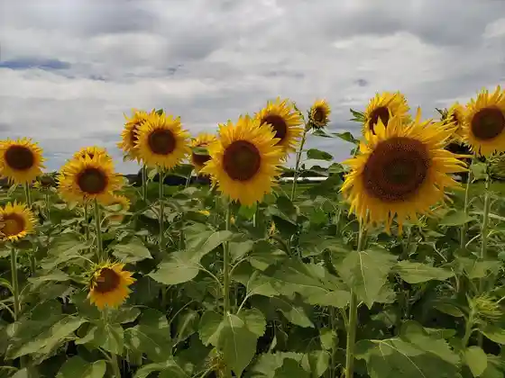
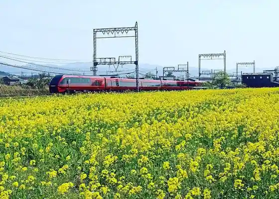
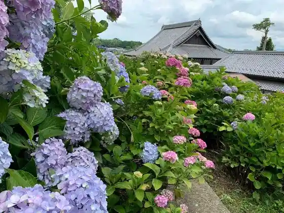
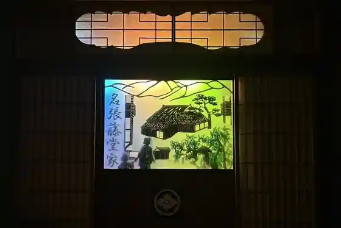

Bi Hata Nitta Chiku no (Himawari)
Nabari, Mie · Official / source link

Bi Hata Nitta Chiku no (Na no Hanahata)
Nabari, Mie · 0595-63-9087 · Official / source link

Miroku Tera
Nabari, Mie · 0595-65-3563 · Official / source link

Iga Machikado Museum Hanabishi Iori Sumita Saketen
Nabari, Mie · 0595-63-0032 · Official / source link

U Ryu Tomi Kokorozashi Ne Shrine
Nabari, Mie · 0595-63-0486 · Official / source link
Joka Kawa Hanaikada
Nabari, Mie · 0595-63-9087 · Official / source link
Nabari Yagawa no Senrozoi I no Na no Hana
Nabari, Mie · Official / source link
Nabari Todo Ie Yashikiato
Nabari, Mie · 0595-63-0451 · Official / source link
Tsumita Shrine
Nabari, Mie · 0595-64-0735 · Official / source link
Akame Shiju Hachi Taki
Nabari, Mie · 0595-63-3004 · Official / source link
Seirenjiko
Nabari, Mie · 0595-63-7648 · Official / source link
Akame Taki Aquarium
Nabari, Mie · 0595-63-3004 · Official / source link
Enju In
Nabari, Mie · 080-2965-5548 · Official / source link
Toretate Nabari Koryu Kan
Nabari, Mie · 0595-62-1755 · Official / source link
Bo Tsutsumi Sakura (Shidarezakura)
Nabari, Mie · 0595-63-7892 · Official / source link
Ninja Forest
Nabari, Mie · 0595-64-2695 · Official / source link
Akame Shizen History Museum
Nabari, Mie · 0595-64-2695 · Official / source link
Akame Shiju Hachi Taki Eko Tour Desuku
Nabari, Mie · 0595-64-2695 · Official / source link
Hanabishi Iori Rekishi Kage Gekijo
Nabari, Mie · 0595-63-0032 · Official / source link
Iyashi Village Nabari Baths
Nabari, Mie · 0595-28-5526 · Official / source link
Doraibuin Akame
Nabari, Mie · 0595-63-3010 · Official / source link
Sugitani Shrine
Nabari, Mie · 0595-63-3265 · Official / source link
Natsumi Haiji Ato Natsumi Haiji Tenjikan
Nabari, Mie · 0595-64-9156 · Official / source link
Bi Hata Kofun Gun
Nabari, Mie · 0595-63-7892 · Official / source link
Edogawaranpo Seitan Kinenhi
Nabari, Mie · 0595-63-7892 · Official / source link
yuno CAMP SITE
Nabari, Mie · 0595-28-0062 · Official / source link
Nabari Kawa Shoren Terakawa
Nabari, Mie · 0595-63-9087 · Official / source link
Minami Ta Shrine
Nabari, Mie · 0595-65-1220 · Official / source link
Ekimae Yakiniku NikuMachi
Nabari, Mie · 0595-48-7255 · Official / source link
Kyochi Kei
Nabari, Mie · 0595-63-7648 · Official / source link
Atago Shrine
Nabari, Mie · 0595-63-9087 · Official / source link
Mudo Tera
Nabari, Mie · 0595-63-3173 · Official / source link
Nagase no Hidari Kan Kaya
Nabari, Mie · 0595-63-7648 · Official / source link
Kan'ami Kensho Hi
Nabari, Mie · 0595-63-7892 · Official / source link
Uma Tsuka Burial Mound
Nabari, Mie · 0595-63-7892 · Official / source link
Akai Tsuka Burial Mound
Nabari, Mie · 0595-63-7892 · Official / source link
Ebisu Shrine
Nabari, Mie · 0595-63-7892 · Official / source link